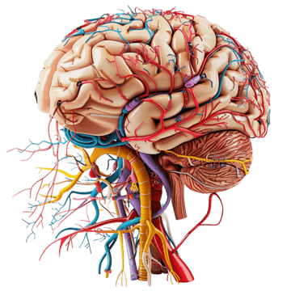

Neuroanatomie
La neuroanatomie est une branche de l’anatomie qui s’intéresse à l’étude du système nerveux qui regroupe le cerveau, la moelle épinière, les nerfs périphériques et les ganglions nerveux. Alors, cette discipline se focalise sur la structure, la fonction et l’organisation de ces éléments. Elle permet de comprendre leur liaison et la manière dont les signaux sont transmis entre les cellules nerveuses. Aussi, la neuroanatomie cherche également à savoir comment le système nerveux est contrôlé en équipe par ses organes afin d’assurer les fonction cognitives et corporelles. Pour ce faire, on recourt à des technologies d’imagerie médicale professionnelles, tels que l’imagerie par résonance magnétique (IRM), la tomographie par émission de position (TEP) et enfin la microscopie.
Spécialistes
Dans cette spécialité, c’est le neuroanatomiste qui étudie l’anatomie du système nerveux.
Études
Pour devenir neuroanatomiste au Québec, il faut avoir un diplôme d’étude collégiales en sciences lettres et arts ou en science de la nature avec les compétences de biologie et de chimie. Ainsi, il sera possible de faire un doctorat en médecine. Avec ce doctorat, il est possible d’être admis au programme de maîtrise en neuroscience, ce qui permettra de développer ses connaissances basiques et d’effectuer un travail de recherche afin de s’initier au champ d’étude de la neuroanatomie.
